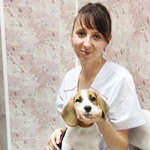
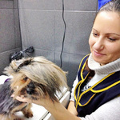

Ветеринарная клиника ВетерОК!
Текстильщики, ул. Шкулёва, д. 5, корп. 1
Митино, Уваровский пер. д.3
Митино, Уваровский пер. д.3
+7 (495) 762-56-70

Вызов ветеринара на дом в Москве от 800 р.
Нужна экстренная помощь?
Наш специалист приедет со всем необходимым
оборудованием и медикаментами, сделает
диагностику, окажет первую помощь, даст
консультации и назначит дальнейшее лечение.
оборудованием и медикаментами, сделает
диагностику, окажет первую помощь, даст
консультации и назначит дальнейшее лечение.
Требуется плановое лечение?
Поездка с животным в клинику это сложная
задача, требующая затрат нервов и денег. При
этом большинство процедур может быть
выполнено и на дому. Вызов врача сэкономит
нервы вам и вашему питомцу.
задача, требующая затрат нервов и денег. При
этом большинство процедур может быть
выполнено и на дому. Вызов врача сэкономит
нервы вам и вашему питомцу.
Внимание!
У наших врачей достаточный опыт, чтобы поставить
первичный диагноз по внешним признакам с ваших
слов слов по телефону.
Дежурный врач выслушает вас, задаст нужные вопросы
и скажет, что делать до его приезда.
Позвоните нам как можно скорее, это бесплатно.
первичный диагноз по внешним признакам с ваших
слов слов по телефону.
Дежурный врач выслушает вас, задаст нужные вопросы
и скажет, что делать до его приезда.
Позвоните нам как можно скорее, это бесплатно.
+7 (495) 709-65-59
Что входит в цену?
Дополнительные услуги:
- Стрижка когтей100p
- Обработка ушных раковин 200p
- Удаление когтей400p
- Инъекция300p
- Вакцинация от бешенства100p
- Снятие зубного камня100p
- Вазектомияот 3000 р.
- Кастрацияот 1500 р.
- Стерилизацияот 2500 р.
- Усыпление1000 р.
- Кремация1000 р..
8 причин, по которым клиенты нас выбирают:

Наши врачи:

Навозова
Екатерина Геннадьевна
Екатерина Геннадьевна
ветеринарный врач-хирург
интенсивная терапия
главный врач клиники
интенсивная терапия
главный врач клиники
Лавров
Владимир Владимирович
Владимир Владимирович
ветеринарный врач
хирург
врач УЗИ-диагностики
хирург
врач УЗИ-диагностики
Власова
Мария Алексеевна
Мария Алексеевна
терапевт

Стриковская
Анастасия Вячеславовна
Анастасия Вячеславовна
терапевт

Кеворкова
Ульяна Юрьевна
Ульяна Юрьевна
грумер-стилист
креативные стрижки
маникюр для животных
креативные стрижки
маникюр для животных
6
ЛЕТ
минимальный опыт работы
наших врачей
наших врачей
4
ТЫСЯЧИ ВЫЕЗДОВ
произведено за время
работы клиники
работы клиники
90
%
клиентов обращаются к
нам повторно
нам повторно
85
%
клиентов рекомендуют
нас своим друзьям
нас своим друзьям
Отзывы о нашей работе:
«Спасибо доктору Владимиру за доброе отношение и качественную работу.
Кошечка быстро пришла в норму и никаких последствий. Очень благодарна за
такую высококвалифицированную помощь, очень долго сомневалась и решалась
стерилизовать ли мою любимицу или нет, но ни разу не пожалела, что обратилась
к вам. Спасибо!»
«Вот не поленился и пишу отзыв, тк при выборе клиники все их смотрят и
поначалу нас смутило небольшое их количество здесь. Заказывали стерилизацию
нашей кошечки на дому (9 мес.), созвонились, все объяснили, записали на
удобное нам время. Потом еще раз позвонил непосредственно врач Владимир,
еще раз все обговорили. В назначенный день все произошло в течение 40-50 минут,
врач сделал 2 укола - успокаивающий (тк кошка была в течке) и собственно наркоз
через минут 10. Удалил через боковой разрез матку и яичники. Разрез минимальный,
около 1,5 см, все аккуратно, никаких повязок и попонок не потребовалось,
на второй день пациентка уже носилась и ела за двоих :) Огромное спасибо доктору
Владимиру, отличный специалист и просто приятный человек, все классно
сделал-объяснил-показал-рассказал. Рекомендую всем обращаться.»
Роман и Людмила, июнь 2014.
«Очень долго решалась на стерилизацию своей любимицы и не пожалела, что выбор пал
на эту клинику и в частности на врача Влаlимира. Очень чуткое и профессиональное
отношение. Шов очень маленький, кошечка через сутки уже бегала и прыгала)
Спасибо за помощь!»
«Хочу выразить свою благодарность Владимиру! Очень добрый, отзывчивый,
квалифицированный специалист. Спасибо за профессиональную стерилизацию
моей кошки в домашних условиях через боковой прокол. В дальнейшем буду
обращаться только к нему!»
Титова Надежда, г. Долгопрудный
«Мы очень сомневались делать или не делать стерилизацию нашей Ириске.
Решение делать далось с трудом. Начали искать клинику, чтобы с выездом
на дом. Нашли ветеринарную клинику «ВетерОк». Что за ветеринар приедет
к нам не знали. И вот приехал к нам доктор Владимир. Очень приятный молодой
человек. Сделал операцию по боковому разрезу. С саморассасывающимся швом.
Начала кошечка отходить от наркоза минут через 15-20 после окончания операции.
Это было зрелище не из легких: медленно двигала глазками, потом головой и
жалобно-жалобно мяукала. Сразу попыталась встать.
Десять часов мы не оставляли ее одну. Были все прелести отхода от наркоза,
все как у людей. Очень переживали все ли с ней в порядке. Через сутки поела
и сделала все дела в лоток. Пошли третьи сутки после операции, наша Ириска есть,
пьет, ходит в лоток, полностью вернулась к активной жизни.
Мы наконец успокоились. СПАСИБО ВЕТВРАЧУ ВЛАДИМИРУ.
СОВЕТУЮ ОБРАЩАТЬСЯ В КЛИНИКУ «ВетерОк» К ДОКТОРУ ВЛАДИМИРУ ВЛАДИМИРОВИЧУ»
«Спасибо высококвалифицированному доктору Владимиру! Он проводил операцию по
стерилизации моей кошечки на дому через боковой разрез. Шов действительно
оказался очень маленьким и аккуратным. Очень добрый, пунктуальный, квалифицированный
и отзывчивый человек. Операция прошла без осложнений. Владимир проконсультировал по
многим интересующим вопросам, в том числе послеоперационного периода.
Огромное спасибо доктору, если понадобиться буду обращаться именно к нему
по вопросам своего питомца.»
«Благодарю замечательного хирурга и просто хорошего человека. Стерилизовал свою
кошечку Липу. Спасибо огромное Вам и Марии Алексеевне за высокий профессионализм,
внимание и любовь к нашим питомцам.»
Дмитрий Чугунов
«Были в этой клинике с нашей кошечкой уже дважды. У Людмилы и Владимира.
Оба врача очень понравились, профессионалы и чуткие люди! Лишних денег
не дерут. А подобранное лечение быстро исцеляет! Теперь всегда только в эту клинику!!!»
Внимание!
У наших врачей достаточный опыт, чтобы поставить
первичный диагноз по внешним признакам с ваших
слов слов по телефону.
Дежурный врач выслушает вас, задаст нужные вопросы
и скажет, что делать до его приезда.
Позвоните нам как можно скорее, это бесплатно.
первичный диагноз по внешним признакам с ваших
слов слов по телефону.
Дежурный врач выслушает вас, задаст нужные вопросы
и скажет, что делать до его приезда.
Позвоните нам как можно скорее, это бесплатно.
+7 (495) 709-65-59
Заказать звонок:
Оставьте свой номер телефона и наш
специалист перезвонит в ближайшее время.
специалист перезвонит в ближайшее время.
Москва, Текстильщики, ул. Шкулёва, д. 5, корп. 1
Москва, Митино, Уваровский пер. д.3
Москва, Митино, Уваровский пер. д.3